ch 5
簡報

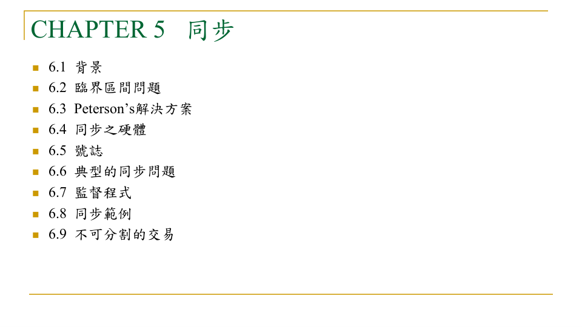
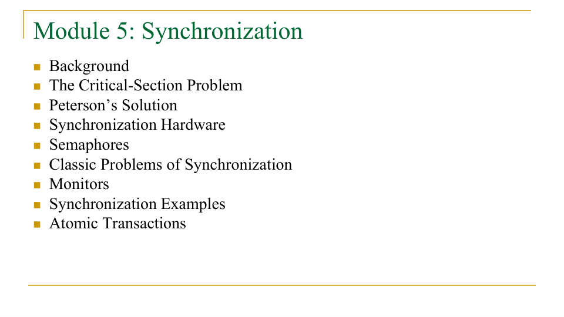
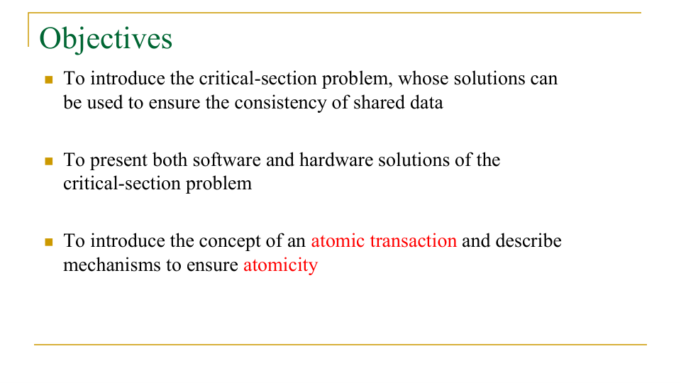
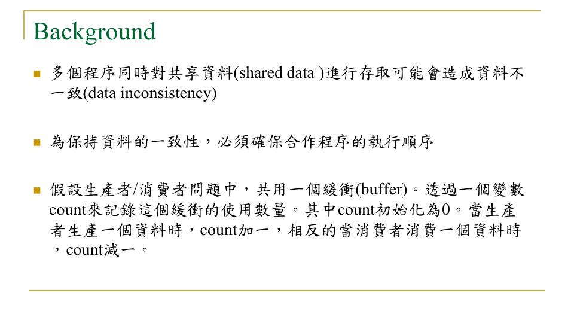
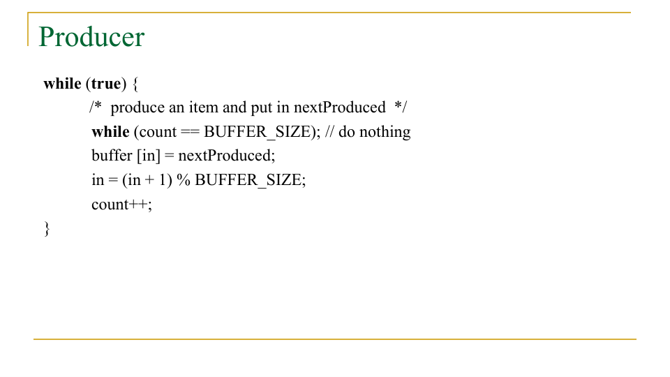
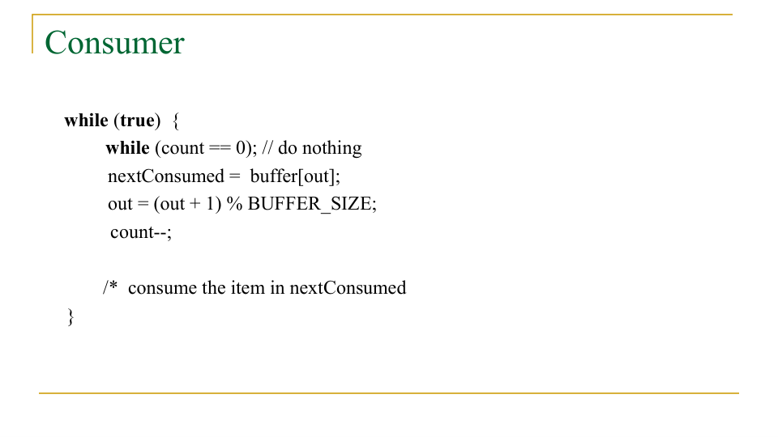
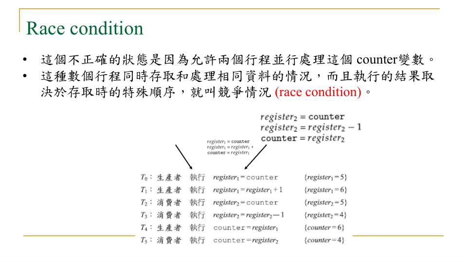
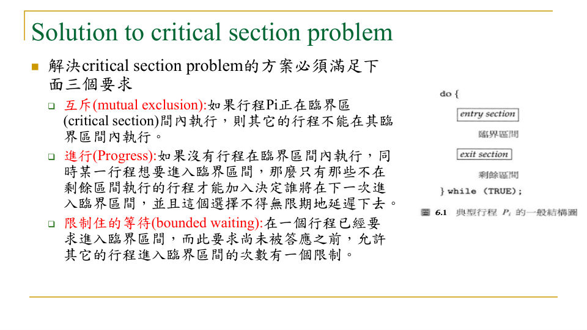
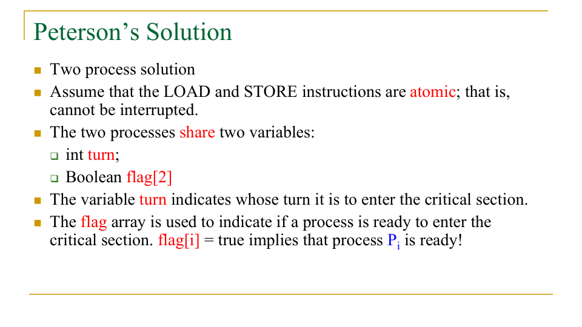
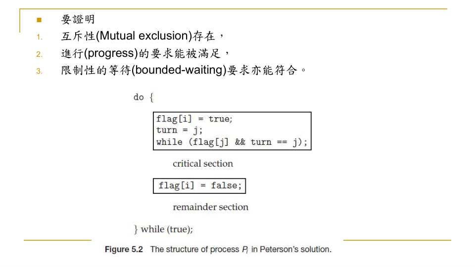
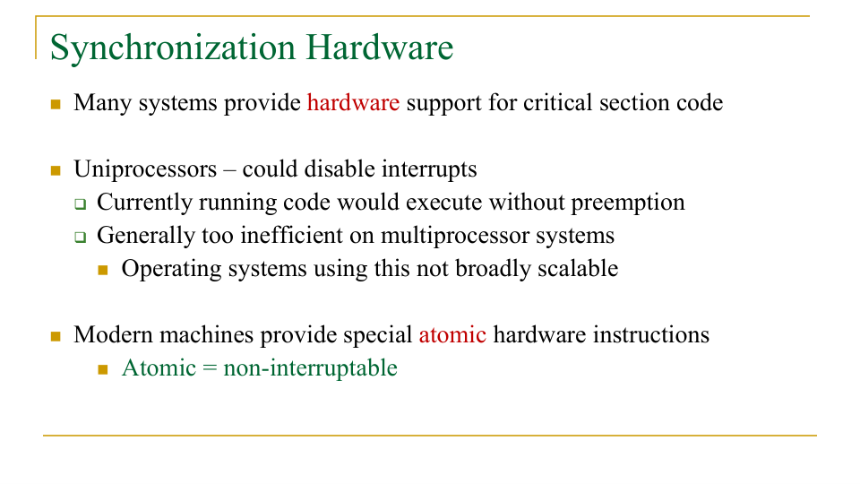
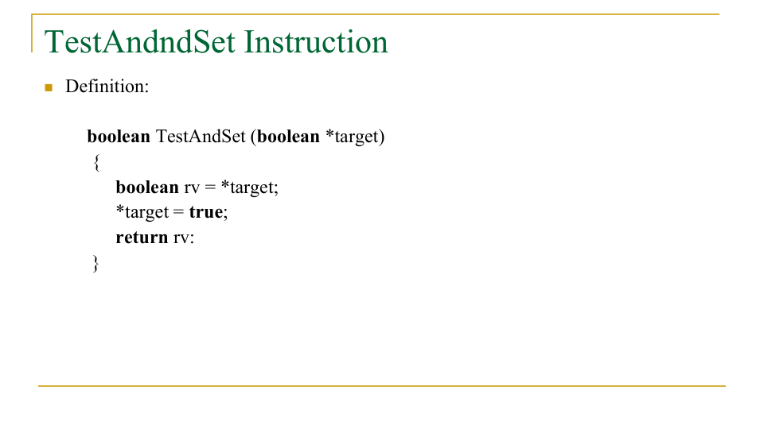
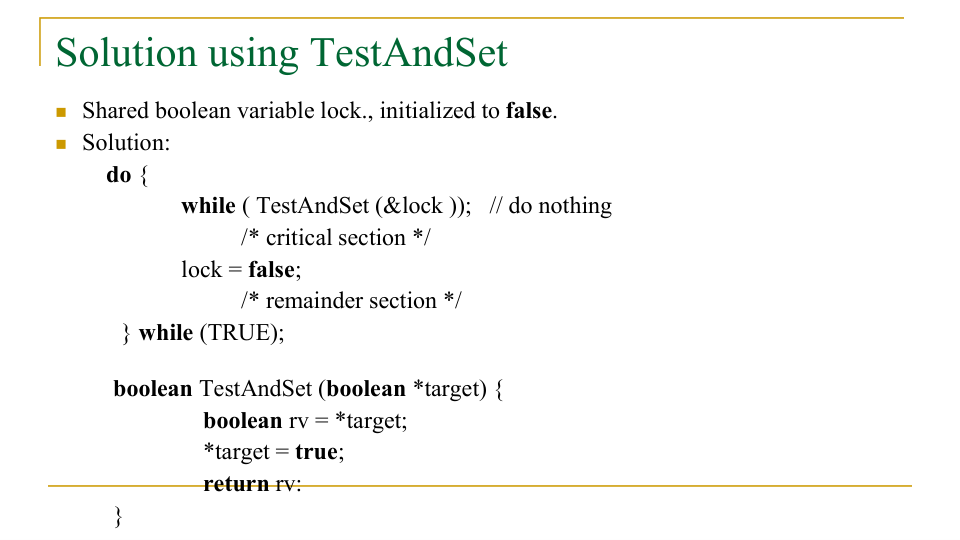
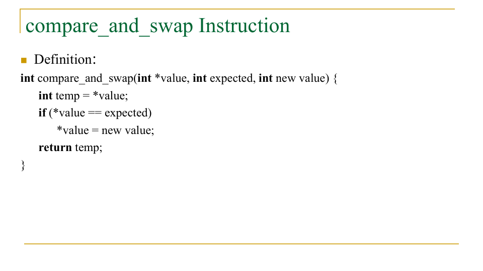
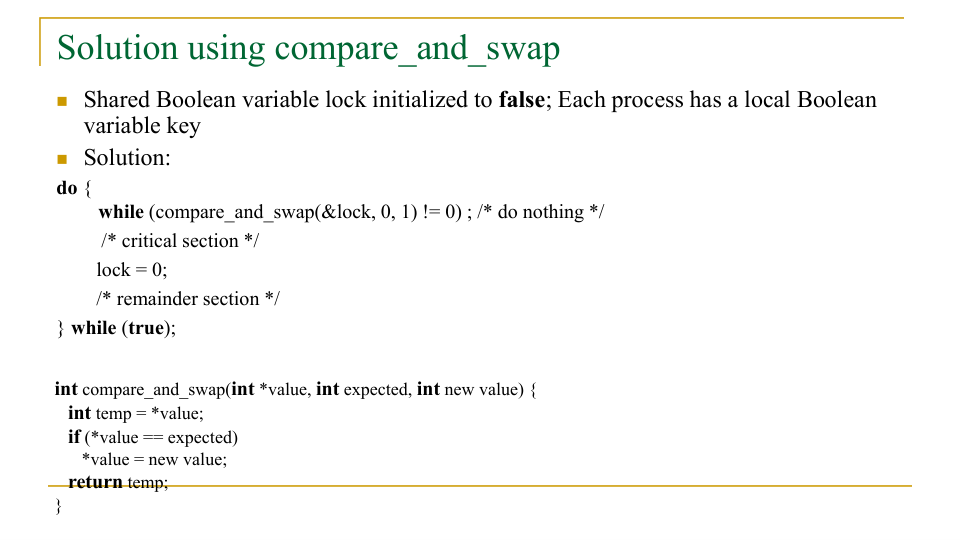
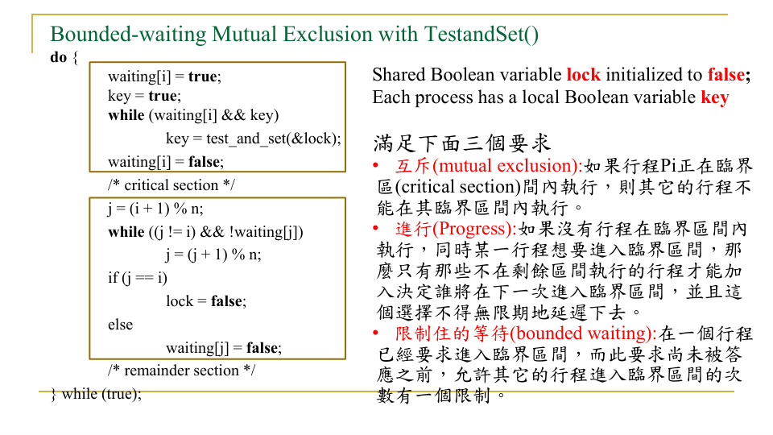
同步(Synchronization)
講解
已啟用教學模式
1. 這一章到底在回答什麼問題
這組投影片的核心問題只有一句話：
當多個 process(行程) 或 thread(執行緒) 同時碰同一份 shared data(共享資料) 時，怎麼避免資料被弄壞。 講義先用 producer / consumer(生產者／消費者) 舉例，說明共享變數 count 會因同時存取而造成 data inconsistency(資料不一致)，接著定義 race condition(競爭情況)，再一步步帶出 critical section problem(臨界區問題)、Peterson’s solution、硬體原子指令、mutex lock、semaphore 等同步工具。
flowchart TB
A[多個 process / thread<br>同時存取 shared data] --> B[可能發生 race condition]
B --> C[資料不一致]
C --> D[需要保護 critical section]
D --> E[判斷解法是否滿足<br>mutual exclusion / progress / bounded waiting]
E --> F[軟體解法<br>Peterson]
E --> G[硬體解法<br>TestAndSet / compare_and_swap]
E --> H[實務工具<br>mutex / semaphore]2. 先講直覺：為什麼明明只有 count++ / count--，還會出事？
直覺上你可能會想：
- producer 生產一個東西，
count++ - consumer 消費一個東西，
count-- - 一加一減，不就剛好抵銷？
問題在於，count++ 和 count-- 不是一顆不可分的動作。它通常會拆成：
- 從記憶體把
count讀進 register(暫存器) - 在 register 裡加一或減一
- 再把結果寫回記憶體
如果 producer 和 consumer 同時做，就可能彼此覆蓋。講義就是用 producer/consumer 的共享 count 來展示這件事，因此才會引出 race condition。
生活化比喻：
兩個人共用一張白板，上面寫現在庫存是 5。
- 生產者看見 5，心裡算成 6
- 消費者也看見 5，心裡算成 4
- 生產者把 6 寫回去
- 消費者再把 4 寫回去
最後白板是 4。
但真實世界其實「先加一再減一」之後應該還是 5。
這就是 結果取決於執行先後順序，也就是講義定義的 race condition。
3. 什麼是 critical section(臨界區)？
critical section 的直覺就是：
一段不能讓兩個人同時進來操作共享資料的程式碼區。
例如：
count++- 對 shared buffer 寫入
- 更新 linked list(鏈結串列)
- 修改 queue(佇列) 的 head/tail
這些都可能是 critical section。
講義說，任何能解決 critical-section problem 的方案，必須同時滿足三個條件：mutual exclusion(互斥)、progress(進行)、bounded waiting(有限等待)。
4. 三個條件到底在說什麼
4.1 mutual exclusion(互斥)
同一時間，最多只能有一個 process 進入 critical section。
這是最基本的要求。
白話就是：
廁所一次只能一個人進去。
如果做不到 mutual exclusion，兩個人同時改共享資料，race condition 就回來了。
4.2 progress(進行)
如果現在沒有人在臨界區裡，而有人想進去，
那就應該讓某個符合資格的人趕快決定並進去，不能無限拖延。
白話就是：
廁所明明空著，你也在排隊，但門口管理員一直不決定讓誰進，這就不行。
4.3 bounded waiting(有限等待)
某個 process 已經表明「我想進 critical section」，
那它不能永遠被別人插隊，必須保證它等待次數有上限。
白話就是：
你排隊排到了，不能每次都被後面的人無限插隊。
5. Peterson’s Solution 在幹嘛
這是講義中的軟體解法，而且是很經典的考題。它假設只有 兩個 process。講義明確寫出它共享兩個變數：
turnflag[2]
其中：
flag[i] = true表示第i個 process 想進 critical sectionturn表示現在「讓誰優先」
它的核心想法很漂亮：
- 我先舉手：
flag[i] = true - 我先禮讓對方：
turn = j - 如果對方也想進，而且現在輪到對方，我就等
- 否則我進 critical section
你可以把它想成兩個人站在單線橋兩端：
flag= 我有沒有想過橋turn= 如果我們兩個都想過，那先讓誰
所以 Peterson 不是單純「搶鎖」，而是「先表達需求，再用 turn 打破平手」。這就是它能同時滿足互斥、進行、有限等待的原因，也是講義要求你證明的三點。
5.1 通用模板
/* Peterson's Solution for two processes */
/* textbook version */
#include <stdbool.h>
volatile bool flag[2] = {false, false};
volatile int turn = 0;
/* process Pi */
void process_i(int i)
{
int j = 1 - i; // the other process
do {
flag[i] = true;
turn = j;
while (flag[j] && turn == j)
; // busy wait
/* critical section */
flag[i] = false;
/* remainder section */
} while (1);
}
5.2 假設有兩個(這方法本來就是用在兩個 process)
#include <stdbool.h>
volatile bool flag[2] = {false, false};
volatile int turn = 0;
void P0(void)
{
do {
flag[0] = true;
turn = 1;
while (flag[1] && turn == 1)
;
/* critical section */
flag[0] = false;
/* remainder section */
} while (1);
}
void P1(void)
{
do {
flag[1] = true;
turn = 0;
while (flag[0] && turn == 0)
;
/* critical section */
flag[1] = false;
/* remainder section */
} while (1);
}
6. Peterson 最容易搞混的地方
很多人第一次看會以為：
turn是不是代表「只有 turn 那個人才能進」？
不完全是。
真正的等待條件是：
- 對方也想進：
flag[j] == true - 而且目前輪到對方：
turn == j
這兩個要同時成立，我才等。
也就是說，turn 不是單獨決定權限，它只是用來處理「雙方都想進」時的平手情況。
這是 Peterson 最容易考的點。
7. Peterson 為什麼課堂上重要，但真實系統很少直接這樣用
就講義範圍來說，Peterson 是拿來教你理解：
- 什麼叫 mutual exclusion
- 什麼叫 progress
- 什麼叫 bounded waiting
- 軟體層面如何設計同步機制
但補充一個比較現代的背景：
講義裡假設 load/store 是 atomic(原子、不可中斷) 的。可是在現代多核心系統上，單靠程式表面順序不一定夠，因為 compiler(編譯器) 與 CPU 可能對 memory access(記憶體存取) 做 reordering(重排序)。Linux kernel 文件明講 memory barriers(記憶體屏障) 的用途就是限制這種重排序；社群討論也常指出 Peterson 在現代多處理器架構上若沒有適當的 memory ordering，就不保證正確。換句話說，考試你照講義寫 Peterson；實作你通常用 mutex/atomic primitives，而不是手刻 Peterson。 ([Kernel Documentation][1])
8. 為什麼要講硬體支援
講義接著說，很多系統會提供 synchronization hardware(同步硬體支援)。在單處理器上，可以靠 disable interrupts(關中斷) 暫時避免搶先，但在 multiprocessor(多處理器) 系統上通常效率差、可擴展性也不好；因此現代機器會提供 special atomic hardware instructions(特殊原子硬體指令)。
這裡的重點不是背硬體細節，而是理解：
軟體想保證同步，最後常常要靠硬體幫你提供「不可分割」的操作。
8. TestAndSet 是怎麼工作的
投影片給的定義是：
boolean TestAndSet(boolean *target) {
boolean rv = *target;
*target = true;
return rv;
}
它最重要的不是程式長怎樣，而是：
「讀舊值」與「把它設成 true」這兩件事，是一次做完的 atomic 動作。
8.1 直覺理解
假設 lock 一開始是 false，代表沒上鎖。
某個 process 呼叫：
TestAndSet(&lock)
會發生：
- 先把舊值取出
- 再立刻把
lock設成true - 回傳原本那個舊值
所以：
- 如果回傳
false，代表你來的時候鎖是空的，你搶到了 - 如果回傳
true，代表別人已經先上鎖了，你沒搶到
8.2 用它做 lock(鎖)
投影片的寫法是：
while (TestAndSet(&lock))
;
/* critical section */
lock = false;
意思是：
- 一直嘗試搶鎖
- 搶到才進 critical section
- 離開時把
lock = false
這確實能做到 mutual exclusion，但有一個代價：
busy waiting(忙等、自旋等待)
也就是等的人不是睡著，而是在那邊一直檢查、一直空轉 CPU。
9. compare_and_swap(CAS) 又是什麼
投影片也給了 compare_and_swap：
int compare_and_swap(int *value, int expected, int new_value) {
int temp = *value;
if (*value == expected)
*value = new_value;
return temp;
}
直覺是：
只有當目前值等於我預期的值時，我才更新它。
這就像你說：
- 如果門現在是「沒鎖」
- 那我就把它改成「已鎖」
如果門早就被別人鎖了，我就不動它。
所以 CAS 也是一種「原子地檢查並更新」的工具。投影片用它做出的 lock，邏輯上跟 TestAndSet 很像，也能保證互斥。
10. 為什麼單純的 TestAndSet / CAS 還不夠好
雖然它們能保證 mutual exclusion，但單純版本有兩個常見問題。
10.1 busy waiting(忙等)
拿不到鎖的人會一直 spin(自旋)，浪費 CPU。
10.2 可能不公平
你可能一直很倒楣，每次都搶輸，於是雖然系統一直在運作，但你可能長期進不去。這就碰到 bounded waiting 的要求了。
所以投影片才又放出一個比較進階的版本：
Bounded-waiting Mutual Exclusion with TestAndSet()
11. 那張最難的圖：Bounded-waiting TestAndSet，到底在幹嘛
這一段很重要，因為它不是只求「鎖住」，而是還想求「不要讓人一直餓死」。
投影片的核心想法是：
lock：全域鎖waiting[i]：記錄第i個 process 是不是正在排隊- 離開 critical section 時，不是隨便放鎖，而是明確把機會交給下一個等待者
11.1 進入前半段
waiting[i] = true;
key = true;
while (waiting[i] && key)
key = test_and_set(&lock);
waiting[i] = false;
直覺是：
- 我先登記：「我在等」
- 然後一直試著拿 lock
- 但只要有人把
waiting[i]改成false，我也會停下來
也就是說，不一定非得自己搶到 lock，前一個人也可以直接把進入權交接給我。
11.2 離開後半段
j = (i + 1) % n;
while ((j != i) && !waiting[j])
j = (j + 1) % n;
if (j == i)
lock = false;
else
waiting[j] = false;
這一段是在找「下一個等待的人」。
- 如果繞一圈都沒人等，那就真的把
lock = false - 如果找到有人在等，例如
Pj，那就把waiting[j] = false
這個動作等於在說：
下一個輪到你，別再等了，直接進來。
11.3 為什麼這樣會有 bounded waiting
因為它是按某種循環順序把機會往後傳，不會讓後來者一直插到你前面。
所以它不只是保證：
- 不會兩個一起進去
還進一步保證：
- 你不會無限期地等下去
這就是 bounded waiting 的本質。
12. 這一段最容易混淆的地方
12.1 race condition ≠ deadlock
很多人會把這兩個混掉。
race condition(競爭條件)
是大家都還在跑，但因為執行順序不同，結果錯了。
像 count 最後變 4 而不是 5。
deadlock(死結)
是大家互相等，最後誰都不動。
前者是「動了但結果錯」，後者是「根本動不了」。
12.2 mutual exclusion 不等於 bounded waiting
有些解法能做到「一次只准一個人進」，但可能做不到「大家終究都等得到」。
所以看到一個 lock 解法時，不要只問：
- 有沒有互斥？
還要問：
- 會不會有人一直等不到？
- 有沒有 busy waiting？
- 是否滿足 progress 與 bounded waiting？
12.3 turn = j 不是 bug
這真的是 Peterson 最常見誤解。
它不是寫反，而是故意把平手裁決權讓給對方，讓衝突有辦法被打破。
13. 用一張圖把這批內容串起來
flowchart TB
A[多個 process / thread<br>同時碰 shared data] --> B[可能發生 race condition]
B --> C[因此需要保護 critical section]
C --> D[好的解法要滿足<br>mutual exclusion / progress / bounded waiting]
D --> E[軟體解法<br>Peterson's Solution]
D --> F[硬體解法<br>atomic instruction]
F --> G[TestAndSet / compare_and_swap]
G --> H[可做 mutex lock]
H --> I[但可能 busy waiting / 不公平]
I --> J[加入 waiting 機制<br>追求 bounded waiting]14. 這一段你現在應該真正記住什麼
先不要背 code，先背下面這條主線：
- 共享資料會因為同時修改而出錯
- 這種錯叫 race condition(競爭條件)
- 所以碰共享資料的區域要當成 critical section(臨界區)
- 好的同步解法要同時滿足
mutual exclusion、progress、bounded waiting - Peterson 是經典兩行程軟體解法
- 現代系統更常靠 atomic hardware instruction
像 TestAndSet / compare_and_swap - 單純鎖住還不夠，還要考慮
busy waiting、公平性、是否會飢餓
15. 最後幫你做一句話版總結
這批投影片的本質就是：
為了讓共享資料保持正確，我們必須把「誰能在什麼時候碰共享資料」這件事管理起來；而同步機制，就是在做這件事。
下一段最自然就是接著講 mutex lock、semaphore(號誌)、以及 bounded-buffer / readers-writers / dining philosophers 這些經典同步問題。
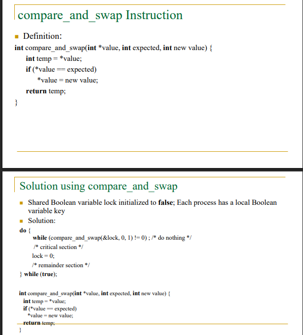
1. 這段在回答什麼問題
這段其實是在回答：
如果很多 process / thread 都想同時進入 critical section(臨界區)，怎麼保證一次只有一個能進去？
講義前面先定義了 critical-section problem(臨界區問題)的三個要求：
- mutual exclusion(互斥)
- progress(進行)
- bounded waiting(有限等待)
而 compare_and_swap 就是硬體提供的一種 atomic(原子化、不可中斷) 指令，用來幫我們做 lock(鎖)。講義也明講現代機器會提供這類 atomic hardware instructions。
2. 直覺理解：它到底在做什麼
你可以把 lock 想成廁所門牌：
0= 沒人用，可以進1= 有人用，不可進
compare_and_swap(&lock, 0, 1) 的意思就是：
「幫我看一下 lock 現在是不是 0。
如果是 0，就立刻把它改成 1。
而且這整件事要一次做完，中間不能被別人插進來。」
這個「看是不是 0」加上「如果是就改成 1」必須綁成一個不可分割動作。
不然如果分兩步：
- 我先看 lock 是不是 0
- 我再把它改成 1
那兩個 process 可能都看到 0，最後兩個都進 critical section，就壞了。
3. 正式概念：compare_and_swap Instruction 是什麼
講義的定義是：
int compare_and_swap(int *value, int expected, int new_value) {
int temp = *value;
if (*value == expected)
*value = new_value;
return temp;
}
3.1 參數意思
value：要檢查並可能修改的共享變數expected：我期待它現在是什麼值new_value：如果真的等於 expected，就把它改成這個新值
3.2 回傳值是什麼
它回傳的是 舊值 old value，也就是 *value 原本的值，存在 temp 裡。
這點超重要。
4. 一步一步拆解 compare_and_swap
假設現在：
lock = 0;
然後某個 process 執行：
compare_and_swap(&lock, 0, 1)
會發生：
temp = lock，所以temp = 0- 檢查
lock == 0，成立 - 把
lock改成1 - 回傳
temp，也就是0
所以：
- 回傳 0 代表「原本沒鎖住，我成功搶到鎖了」
- 回傳 1 代表「原本已經有人鎖住，我沒搶到」
5. Solution using compare_and_swap 怎麼看
講義的解法是：
do {
while (compare_and_swap(&lock, 0, 1) != 0) ; /* do nothing */
/* critical section */
lock = 0;
/* remainder section */
} while (true);
6. 這段程式在幹嘛
6.1 while (compare_and_swap(&lock, 0, 1) != 0) ;
意思是：
- 不斷嘗試把
lock從0改成1 - 如果回傳值不是
0，表示原本不是空的，沒搶到鎖 - 那就一直重試
也就是：
一直自旋(spin)等到鎖變空，然後原子化地把它搶下來
所以這是一種 spinlock(自旋鎖) 寫法。
6.2 /* critical section */
只要某個 process 成功把 lock 從 0 改成 1，它就能進 critical section。
6.3 lock = 0;
離開 critical section 時，把鎖釋放掉，讓別人有機會進來。
7. 兩個 process 同時搶鎖時，實際會怎樣
假設 P0 和 P1 同時跑到：
compare_and_swap(&lock, 0, 1)
而一開始 lock = 0。
因為這個 instruction 是 atomic，所以不會真的「同時」改到同一個值，硬體一定會幫你序列化成某個先、某個後。
例如：
-
P0先執行 -
看到
lock = 0 - 改成
1 - 回傳
0 -
P0進入 critical section -
P1後執行 -
看到
lock = 1 - 不改
- 回傳
1 P1留在 while 迴圈裡一直等
所以只會有一個 process 進 critical section。
這就是 mutual exclusion(互斥)。
8. 用流程圖看比較直覺
flowchart TB
A[開始嘗試進入 critical section] --> B[執行 compare_and_swap(&lock, 0, 1)]
B --> C{回傳值是否為 0?}
C -- 否 --> D[沒搶到鎖<br>繼續 busy waiting]
D --> B
C -- 是 --> E[成功把 lock 從 0 改成 1]
E --> F[進入 critical section]
F --> G[離開時 lock = 0]
G --> H[進入 remainder section]9. 為什麼這能保證 mutual exclusion(互斥)
關鍵只有一句：
從「檢查 lock 是否為 0」到「把 lock 設成 1」是原子化的。
所以不可能發生下面這種錯誤：
P0看見 lock=0P1也看見 lock=0- 兩個都進去
因為硬體保證這不是兩步，而是一個不可拆開的動作。
因此同一瞬間，最多只有一個人能把 lock 從 0 變成 1。
10. 它有沒有滿足 progress(進行) 與 bounded waiting(有限等待)
這裡要小心，不能直接亂說「三個都滿足」。
10.1 mutual exclusion
✅ 有
因為 CAS 是 atomic，所以一次只有一個 process 能成功把 lock 從 0 改成 1。
10.2 progress
大致上可以運作。只要 lock 被釋放，某個等待中的 process 終究會搶到。
10.3 bounded waiting
這個簡單版通常不能保證。
原因是它只是一直重試：
while (compare_and_swap(&lock, 0, 1) != 0) ;
誰先搶到，取決於排程與時機。
有可能某個倒楣 process 一直搶輸，產生 starvation(飢餓)。
這也是為什麼講義後面另外給了 Bounded-waiting Mutual Exclusion with TestAndSet() 的版本，表示前面那種最簡單硬體鎖法，重點主要是先做到互斥，不一定保證有限等待。
11. 這份投影片有一個小地方你要注意
投影片在 compare_and_swap 那頁寫：
Each process has a local Boolean variable key
但下面這份 CAS 程式：
do {
while (compare_and_swap(&lock, 0, 1) != 0) ;
/* critical section */
lock = 0;
/* remainder section */
} while (true);
根本沒用到 key。
所以這裡你不要硬背成「CAS 解法一定要有 key」。
這頁真正有在用的只有：
- shared
lock - atomic
compare_and_swap
key 比較像是前一個 TestAndSet 或 bounded-waiting 版本殘留的描述。
12. 它的缺點是什麼
12.1 busy waiting(忙等)
在 while 裡什麼事都不做，一直重試：
while (compare_and_swap(&lock, 0, 1) != 0) ;
這會一直吃 CPU。
所以這種 lock 叫 spinlock(自旋鎖)。講義後面也明講這類 lock 需要 busy waiting。
12.2 不能保證公平
誰先搶到鎖，不一定公平。
12.3 臨界區太長時不划算
如果 critical section 很長，別人一直 spin 會很浪費。
這時通常 semaphore / mutex with blocking 會更適合。
13. 跟 TestAndSet 有什麼差別
兩者都屬於：
- hardware synchronization primitive(硬體同步原語)
- atomic instruction
- 可拿來做 lock
但差別在動作型態：
TestAndSet
比較像：
直接把 target 設成 true，然後回傳原本的值
compare_and_swap
比較像：
只有當目前值等於 expected 時，才改成 new_value
所以 CAS 比較一般化、比較靈活。
你可以把它理解成「帶條件的原子更新」。
14. 你真正要記住的考點
14.1 compare_and_swap 的本質
它是：
比較 + 條件更新 + 整包原子化
14.2 回傳值要記
它回傳的是 修改前的舊值，不是成功或失敗的布林值。
14.3 為什麼 while 裡判 != 0
因為：
- 回傳
0：代表原本 lock 是 0，我成功搶到 - 回傳非
0：代表原本已被鎖住，繼續等
14.4 這個簡單解法的性質
- ✅ 可保證互斥
- ❌ 不一定保證 bounded waiting
- ❌ 有 busy waiting
15. 小結
一句話總結：
compare_and_swap是一個 atomic instruction，用來「原子化地檢查某值是否等於 expected，若是就改成 new value，並回傳舊值」；拿它做 lock 時，大家一直嘗試把lock從0改成1，成功的人進 critical section，離開後再把lock設回0。這能保證 mutual exclusion，但會 busy waiting，而且簡單版本不保證 bounded waiting。
如果你要，我下一則可以直接接著幫你講：
「這題考試要怎麼手寫證明 mutual exclusion」，或是 「compare_and_swap、test_and_set、mutex、semaphore 四者差異表」。
最後看到p.16
file:///D:/%E6%88%91%E7%9A%84%E9%9B%B2%E7%AB%AF%E7%A1%AC%E7%A2%9F%20(peicd100@gmail.com)/0_%E5%A4%A7%E5%AD%B8/0_%E7%AD%86%E8%A8%98/0_%E5%B8%AB%E5%A4%A7114-2/%E9%9B%BB%E6%A9%9F_%E4%BD%9C%E6%A5%AD%E7%B3%BB%E7%B5%B1/%E6%95%99%E6%9D%90/chapter%205_20240405.pdf